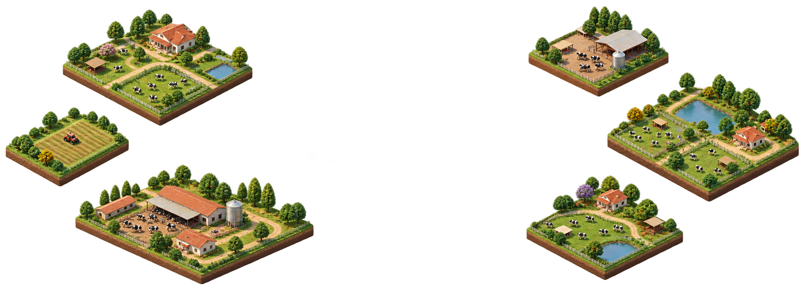

Observe o rebanho
Explore o mapa da fazenda e acompanhe a rotina simulada dos animais ao longo do dia.

Protótipo interativo para cenários de fazenda
Mude uma condição, acompanhe o rebanho e veja o que acontece neste pequeno mundo demonstrativo.
Protótipo experimental · resultados não validados para manejo real
PERGUNTAS ANTES DE RESPOSTAS
O Agroville transforma uma pergunta de manejo em um cenário que você pode explorar. A comparação mantém as demais condições iguais para tornar visível o que o protótipo está testando.
É uma ferramenta de exploração e aprendizagem. Não faz previsões nem recomenda decisões para uma fazenda real.
COMO FUNCIONA
Explore o mapa da fazenda e acompanhe a rotina simulada dos animais ao longo do dia.
Altere alojamento, dieta, suplemento ou clima sem misturar as mudanças no mesmo experimento.
Veja lado a lado o cenário de referência e a alternativa durante 30 dias demonstrativos.
TRANSPARÊNCIA VEM PRIMEIRO
O motor atual usa regras e parâmetros simplificados para demonstrar como uma comparação funciona. Ele ainda não foi calibrado nem validado com dados zootécnicos independentes.
Leia os limites do modeloO que você vê no simulador é calculado por regras locais e reprodutíveis, não por medições de uma fazenda real.
O explorador de dados mostra um ensaio publicado de bezerras; esses registros não calibram o rebanho adulto simulado.
Antes de orientar qualquer decisão, o modelo precisa de um caso zootécnico definido e avaliação independente.
DADOS OBSERVADOS
Explore peso e ingestão registrados em um ensaio publicado com bezerras. Os dados aparecem como observações, separados dos resultados produzidos pelo simulador.
Abrir explorador de dados ADG e pastejo de adultosCONSTRUINDO COM EVIDÊNCIA
O Agroville está em desenvolvimento. Sugestões de pesquisa, dados e cenários podem ajudar a definir os próximos passos.